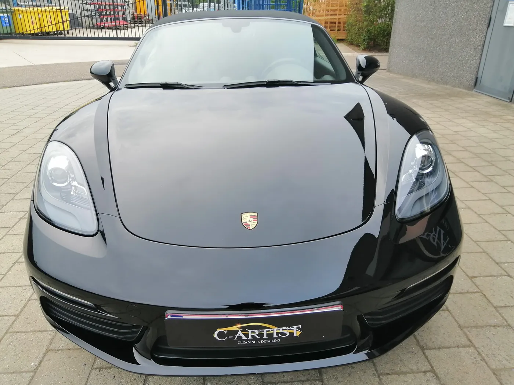
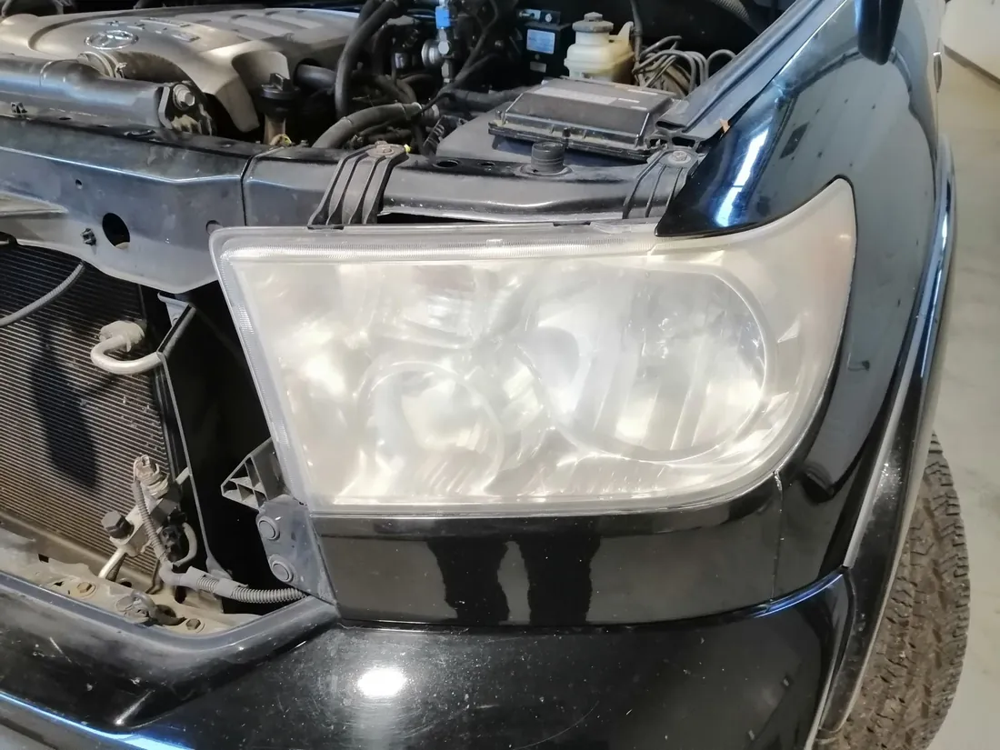
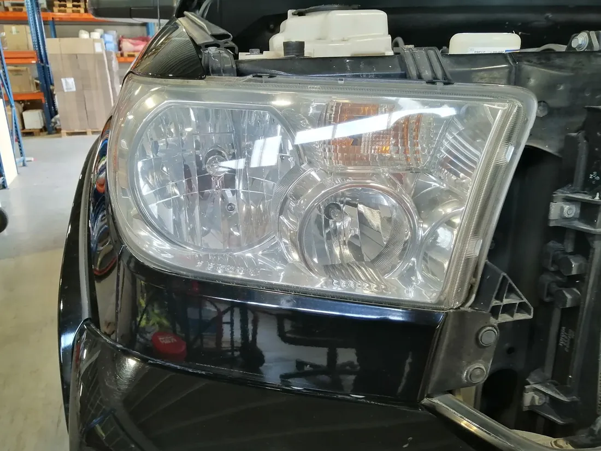
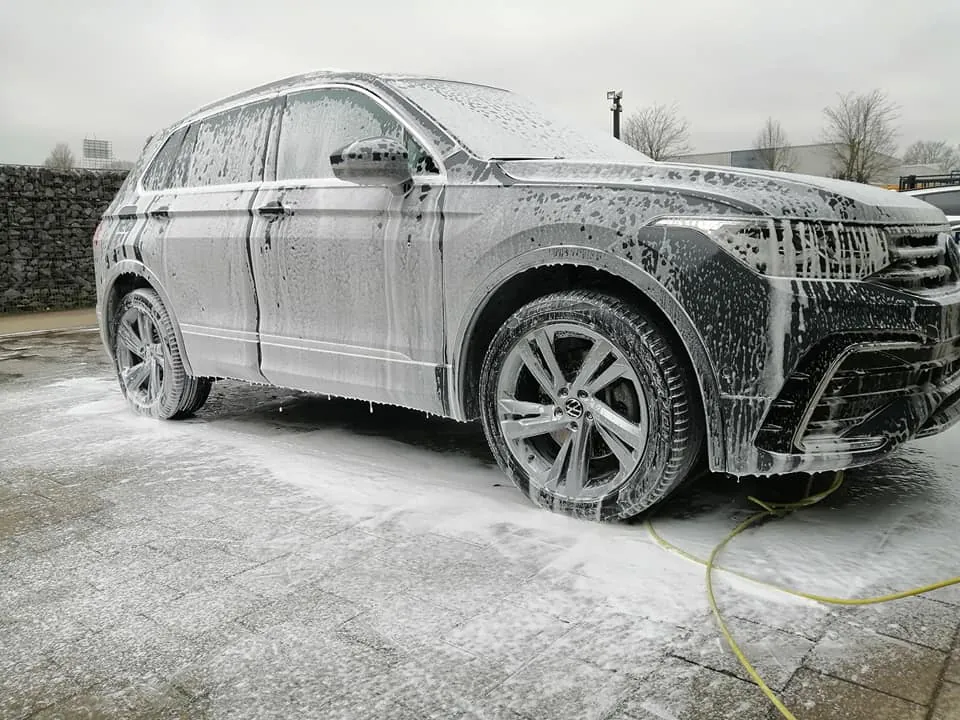
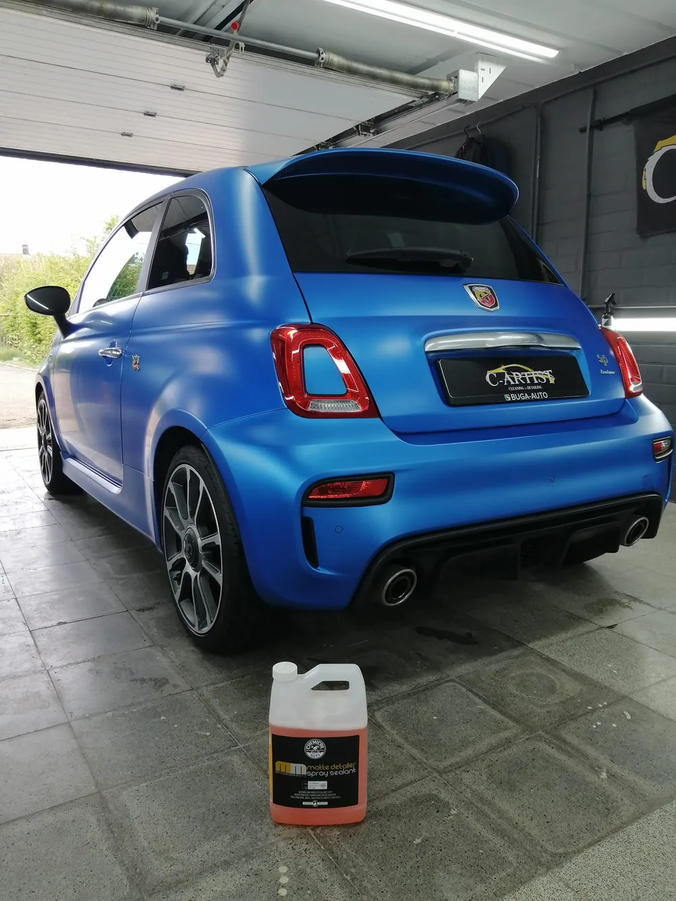
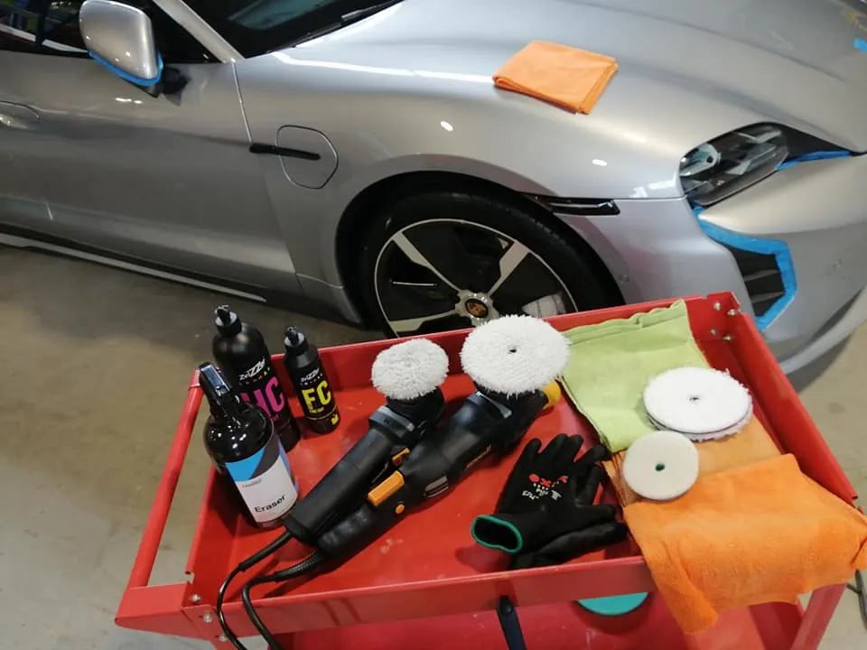
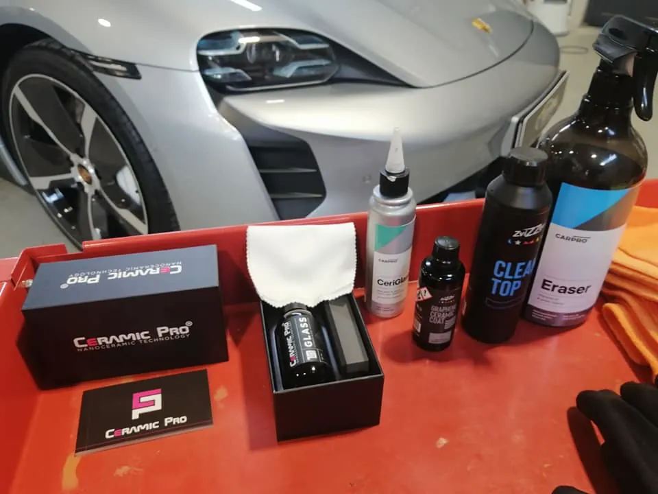
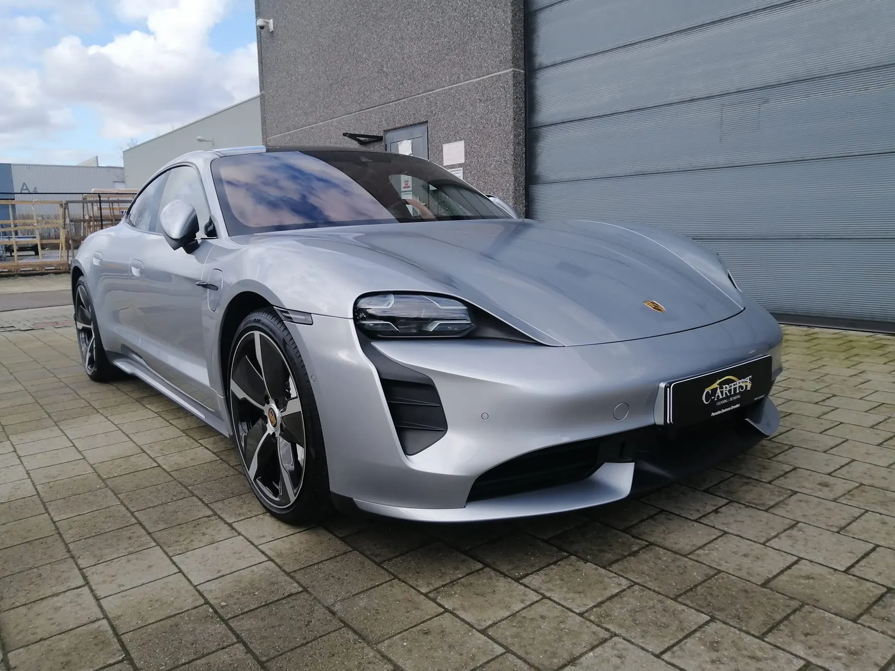
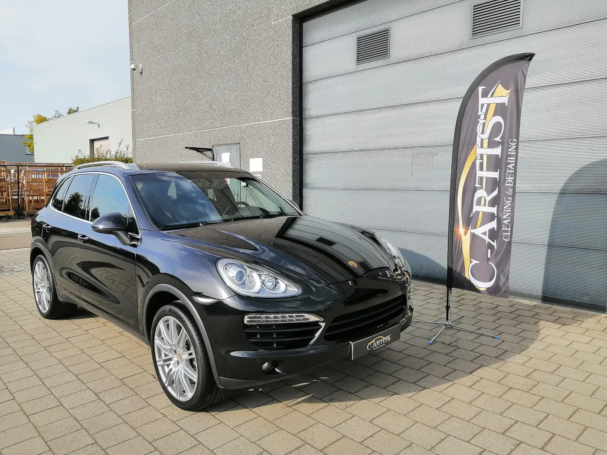

Jouw wagen, mijn canvas.
Ik ben Sen. Bij mij kan je terecht voor een volledige behandeling van je wagen, binnen en buiten. Van een simpele was tot een coating die je lak lang beschermt.


voor
naKoplamp restauratie: geschuurd en gepolijst
Elke wagen krijgt de tijd.
Een luxueuze wasbeurt, een interieur dat terug als nieuw voelt, krassen die verdwijnen onder de polijstmachine. Zo ziet een gewone werkdag eruit.



Benieuwd wat er met jouw wagen kan? Stuur gerust een foto, dan kijk ik even mee.
Neem contact op

Uit het atelierEen autoliefhebber, al heel mijn leven.
Ik heb heel wat autoshows afgeschuimd en nog veel meer races bijgewoond, altijd op zoek naar speciale, mooie en blinkende bolides. Uit die liefde is C-artist gegroeid.
- Interieur én exterieur
- Polijsten in één of meer stappen
- Coatings en wax
- Koplamp restauratie
Zin om je wagen eens te laten verwennen?
Stuur een WhatsApp, bel of mail. Dan bekijken we samen wat je wagen nodig heeft.
